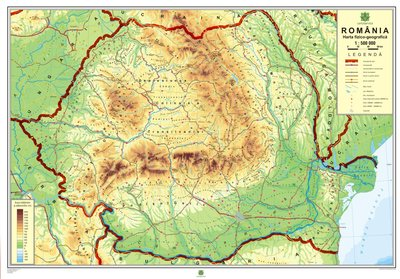
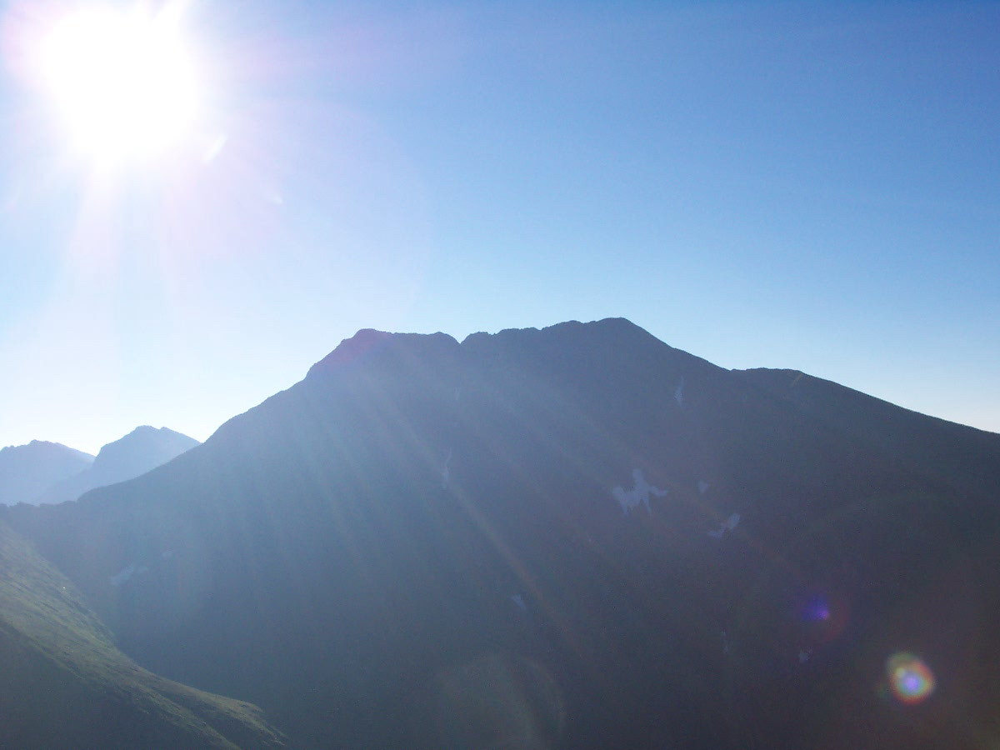
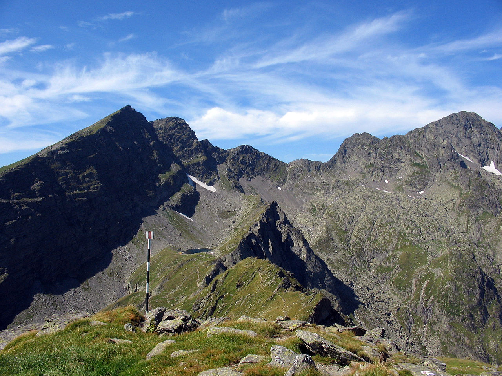

|
Az Eurázsiai-hegységrendszer része, a Kárpátok (román: Carpații) teljes hosszának kétharmada Románia területére esik, az ország természetföldrajzi gerincét képezi.[8] Csúcsai elérik a 2500 métert is. Legmagasabb a Moldoveanu-csúcs (2544 m) a Fogarasi-havasokban. Két nagy területre különíti el az országot. E két nagy terület között húzódik félkörívben a Keleti-Kárpátok (Carpații Orientali) és a Déli-Kárpátok (Carpații Meridionali) hegységrendszere. A Déli-Kárpátok folytatásaként az Al-Dunáig tart a Bánsági-hegyvidék (Muntii Banatului).  |
|
A Fogarasi-havasokban található 2544 méteres Moldoveanu-csúcs (régen használatos magyar elnevezéssel Moldován-csúcs) Románia legmagasabb hegye. A csúcs a főgerinctől kissé délebbre, egy oldalgerincen van, így a Fogarasi-medencéből nem látszik, csak a főgerincről.  |
|
A Negoj-csúcs (románul: Negoiu) a Fogarasi-havasokban 2535 méteres magasságával Románia második legmagasabb hegye a Moldoveanu-csúcs (2544 m) után. A 20. század elejéig a Negoj-csúcsot tartották a Kárpátok legmagasabb hegyének a Magas-Tátrán kívül. A Negoj-csúcs érdekessége még, hogy a tetején áll még a régi magyar határkő is.  |